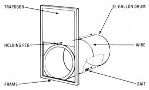
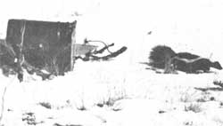

Skunks are really pretty amiable, good little beings most of the time, and they're certainly ecologically important critters too. After all, polecats consume-among other things-rats, mice, insects, and reptiles (thus providing a portion of nature's own biological population control among those animals). The beasts clean up roadside carrion as well ... often getting run over while performing this nocturnal service, as motorists learn-by nose-when approaching the site of the accident.
The creature's obnoxious spray-which is the skunk's only defense against enemies-is stored in two nutlike glands encased in muscles on either side of its rectum. When quickly compressed by a flip of the tail-an almost automatic action on the frightened skunk's part-these organs eject an odoriferous liquid over a range of 10 to 15 feet and within an arc of 180 degrees. (Many authorities believe the animals can also expel the acrid liquid voluntarily . . . when their glands become uncomfortably full.) The spray is more than just unsocial, too. In fact, the secretion is so potent that it can cause blindness if it enters a pet's or human's eyes!
Skunks, being scavengers, are particularly attracted to garbage. Therefore, my open compost box proved to be a handy restaurant for a polecat that took up residence in our subdivision. The critter sprayed my nosy dog twice, rendering her unfit for human companionship ... and-equally disturbing-the skunk took nightly strolls through the thick bushes below our bedroom window, relieving its bulging scent glands and awakening us-noses shriveled and eyes watering-at 2:00 or 3: 00 a.m.
As winter came on, there was some relief for polecats "den up" on especially cold days (rather than actually hibernate). However, the first hint of sunshine tempts the critters out again, so-during a warm spell last December-when the odorous beast scattered composting eggshells over half our property, we determined to evict the skunk from our premises.
Using instructions supplied by a local Wildlife Regional Commission technician, my husband built a skunk trap from a 15-gallon grease can. On the container's open end, he attached a rectangular wooden frame which enclosed a sliding door. This portal was held above the opening by a wooden peg inserted in a small hole bored near the door's base. A nylon wire-attached to the peg-ran back over the can . . . slid through an eye ring fastened to the ''top'' of the container (as the drum lay on its side) ... descended into the can by way of a small opening cut behind the ring . . . I threaded through a second eyebolt set in the trap's "floor" . . . and was tied to a chunk of bait.
Any tasty tidbit, such as a piece of raw chicken can be used as a lure ... or softer bait, like cooked egg can be first enclosed in a mesh bag and then fastened to the line. When a polecat enters and pulls at the tempting morsel, the wire yanks the peg from the slot and the door drops-like the blade of a guillotine-to imprison the intruder.
It's perhaps indicative of the effrontery of our resident polecat that we netted him on the very first night our new trap was set near the compost box.
"I've never known a skunk to spray while in a dark trap,'' the helpful technician had said, so-draping a piece of canvas over the closed can, to insure the complete darkness that (he hoped) would prevent a "scenting"-my husband carried the apparatus and its occupant to his pickup, and drove to a distant undeveloped area that adjoined a large pine woods.
Fearing that the prisoner would dart to freedom as soon as the door was lifted (and be fightin' mad, too'), my cautious spouse put a board-attached to a long rope-against the entry, then gingerly raised the trapdoor and fastened it open with the peg, Nimbly, he ran to the end of the rope and jerked the board away from the opening ... but nothing happened.
Next, my husband tossed pine branches at the trap-hoping to startle the skunk in to flight-but the little animal did no more than poke a cautious nose out the door and then retreat into its safe dark shelter.
Finally, again using the margin of safety provided by the rope, my spouse positioned the board so he could rock the polecat's new den from a distance, and at last our skunk emerged and padded all around the barrel, studying it closely (That beast'll know a trap the next time it sees one!) Its curiosity satisfied, the pole cat headed-still leisurely-for the trees.
We hope the critter'll be as happy in its new home as we are to have it away from ours!
|
 |
 |
|